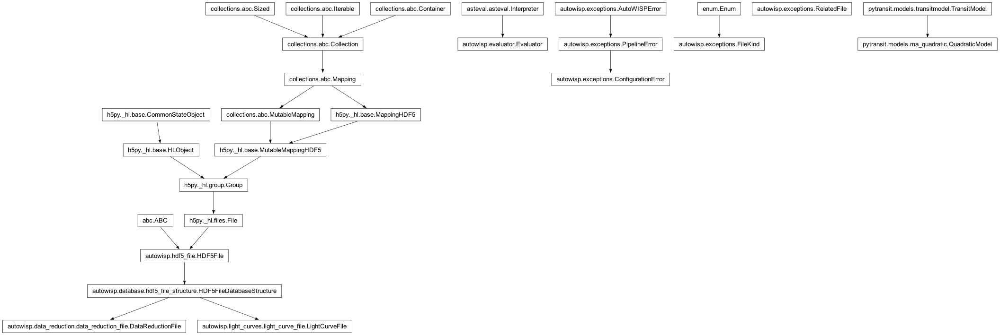

autowisp.processing_steps.lc_detrending module
Class Inheritance Diagram

Functions for detrending light curves (EPD or TFA).
- autowisp.processing_steps.lc_detrending._add_catalog_info(lc_fnames, catalog_sources, magnitude_expression, result=None)[source]
Fill the catalog information fields in result.
- autowisp.processing_steps.lc_detrending._check_fit_datasets_available(lc_fname, fit_datasets, detrending_mode)[source]
Raise ConfigurationError if an input dataset is missing from a lightcurve.
Without this, a mismatch between the datasets EPD produced and the ones TFA was configured to correct only surfaces deep inside the fitting, as a confusing error about the lightcurve structure.
- autowisp.processing_steps.lc_detrending._generate_statistics(lc_fnames, configuration, *, detrending_mode, catalog_fname, output_fname, mark_progress)[source]
Compute, augment and save the detrending statistics (see caller).
- autowisp.processing_steps.lc_detrending._get_default_fit_datasets(sphotref_dr, detrending_mode, apphot_version=0, shapefit_version=0)[source]
Return the datasets to detrend if the user did not specify any.
- Parameters:
sphotref_dr (DataReductionFile) – The single photometric reference, opened for reading.
detrending_mode (str) – Either
'epd'or'tfa'.apphot_version (int) – The version of the aperture photometry whose apertures to detrend.
shapefit_version (int) – See _shape_fit_varies().
- Returns:
The same format the
--<mode>-datasetsargument parses to.- Return type:
- autowisp.processing_steps.lc_detrending._shape_fit_varies(sphotref_dr, shapefit_version)[source]
Whether star shape was fit rather than assumed constant accross each star.
Shape fitting is performed on a grid (see the
shape-gridoption ofwisp-fit-star-shape). If only the outer boundaries of that grid are specified, the PSF/PRF is assumed not to vary accross the star, so the shape fitted magnitudes carry no information beyond aperture photometry and detrending them is a waste of time.- Parameters:
sphotref_dr (DataReductionFile) – The single photometric reference, opened for reading.
shapefit_version (int) – The version of the shape fit to inspect.
- Returns:
Whether the grid the shape was fit on has any internal splits.
- Return type:
- autowisp.processing_steps.lc_detrending.calculate_detrending_performance(lc_fnames, start_status, configuration, mark_progress, detrending_mode)[source]
Create a statistics file after de-trending directly from LCs.
- Parameters:
lc_fnames – Iterable over the filenames of the de-trended lightcurves to rederive the statistics for.
catalog_fname – The filename of the catalog to add information to the statistics.
magnitude_column – The column from the catalog to use as brightness indicator in the statistics file.
output_statistics_fname – The filename to save the statistics under.
recalc_arguments – Passed directly to recalculate_correction_statistics()
- autowisp.processing_steps.lc_detrending.correct_target_lc(target_lc_fname, configuration, correct)[source]
Perform reconstructive detrending on the target LC.
- autowisp.processing_steps.lc_detrending.detrend_light_curves(lc_collection, configuration, correct)[source]
Detrend all lightcurves and create statistics file.
- autowisp.processing_steps.lc_detrending.extract_target_lc(lc_fnames, target_id)[source]
Return target LC fname, & LC fname list with the target LC removed.
- autowisp.processing_steps.lc_detrending.get_transit_parameters(configuration, unwind_limb_darkening=True)[source]
Return the parameters to pass to pytransit model.